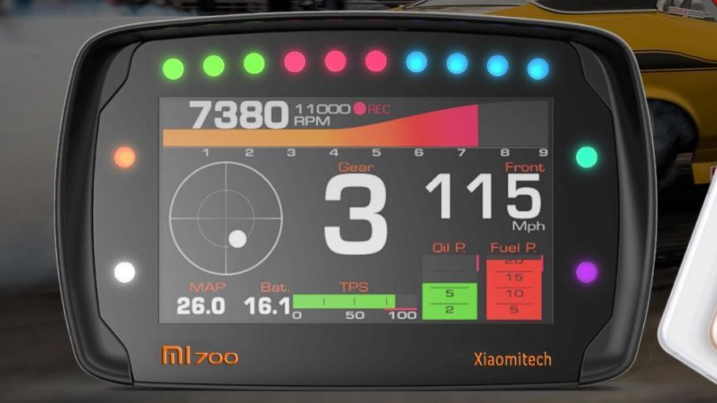

Os módulos de injeção programável fazem parte do desenvolvimento da eletrificação, e com isso as ECUs se tornaram VCUs (Vehicle Control Unit, a Unidade de Controle do Veículo). Além de gerenciar por completo o motor de combustão interna, também podem gerenciar o motor elétrico e diversas outras funções importantes para o veículo, tais como: controle do torque e potência do motor elétrico, controles independentes de temperatura e de arrefecimento dos sistemas a combustão e elétrico, controle dos limites da bateria, de regeneração de energia e de recarga, e principalmente interligar todos os periféricos do veículo gerando melhor segurança e performance na aplicação.
